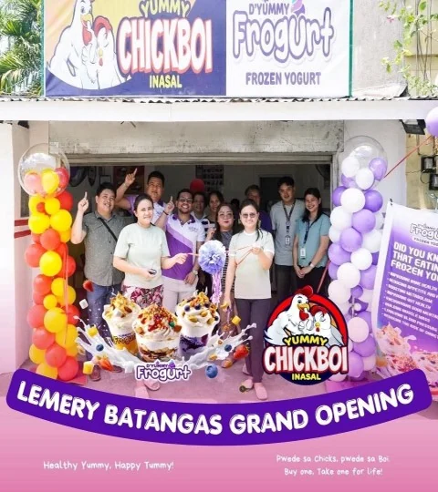

D'Yummy franchise network
Find a D'Yummy near you.
Search 20 listed locations across Luzon, Visayas, and Mindanao. Select a region to explore its branches, then open the complete address in Google Maps.
20
listed D'Yummy
Frogurt locations
Frogurt locations
- Luzon
- 17
- Visayas
- 01
- Mindanao
- 02
Openings, not stock photos
Real locations. Real opening milestones.
Owned photographs document franchise partners and opening milestones without implying guaranteed business results.



No branch near your area?
Maybe the next point on the map is yours.
Compare concepts and packages, then tell the team where you plan to operate.